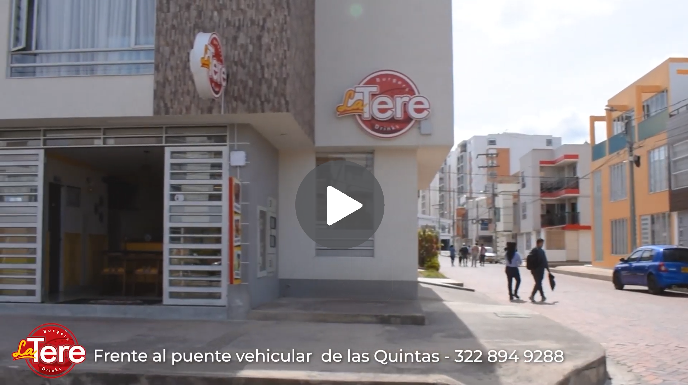

<ion-header [translucent]="true">
  <ion-toolbar>
    <ion-buttons slot="start">
      <ion-back-button defaultHref="tabs/tab4"></ion-back-button>
    </ion-buttons>
    <ion-title>
      <ion-icon class="logo" src="././assets/icon/LogoVector.svg"></ion-icon> 
    </ion-title>
  </ion-toolbar>
</ion-header>

<ion-content [fullscreen]="true" class="ion-padding">
  <section class="flex noScroll">
    <h2 class="title">Ubícanos</h2>
    <p>Si no visualiza bien el mapa, verifique que tenga acceso a internet o reinicie la aplicación.</p>
    <div id="map" class="map-container"></div>

    <h3 class="title">¿Cómo encontrarnos?</h3>
    
  </section>
</ion-content>
